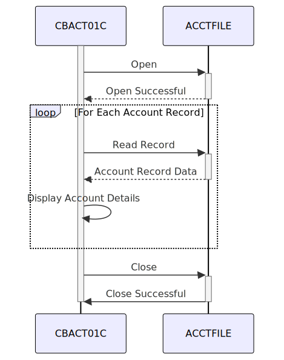

Gerado em: 1º de outubro de 2024
Título do Documento: CardDemo Application - Especificação do Programa de Processamento em Lote de Dados de Conta
Descrição Resumida:
O programa de Processamento em Lote de Dados de Conta CardDemo foi projetado para ler e exibir informações de contas de cartão de crédito de um arquivo seguro. Este programa processa sequencialmente cada registro de conta, apresentando um resumo de seus detalhes e garantindo a integridade dos dados durante todo o processo.
Histórias do Usuário:
Como analista de dados, preciso ter certeza de que todas as informações da conta do cartão de crédito sejam processadas com precisão e estejam facilmente disponíveis para análise e geração de relatórios.
Épico Relacionado:
7 - Processamento em Lote
Requisitos Funcionais:
-
Acesso e Manuseio de Arquivos:
- O programa deve ser capaz de localizar e abrir o arquivo de dados da conta designado (ACCTFILE).
- Ele deve manipular o arquivo com segurança, abrindo-o apenas para entrada.
- O programa deve ser capaz de lidar normalmente com cenários em que o arquivo não é encontrado ou está inacessível.
-
Processamento Sequencial de Registros:
- O programa deve ler os registros da conta um após o outro na ordem em que estão armazenados no arquivo, garantindo que todos os registros sejam processados.
- Após o processamento de um registro, ele deve buscar o próximo registro disponível até que o final do arquivo seja atingido.
-
Extração e Exibição de Dados:
- Para cada registro de conta, o programa deve extrair os detalhes relevantes, incluindo:
- ID da conta (ACCT-ID)
- Status da conta (ACCT-ACTIVE-STATUS)
- Saldo atual (ACCT-CURR-BAL)
- Limite de crédito (ACCT-CREDIT-LIMIT)
- Limite de crédito em dinheiro (ACCT-CASH-CREDIT-LIMIT)
- Data de abertura da conta (ACCT-OPEN-DATE)
- Data de expiração da conta (ACCT-EXPIRAION-DATE)
- Data de reemissão da conta (ACCT-REISSUE-DATE)
- Crédito do ciclo atual (ACCT-CURR-CYC-CREDIT)
- Débito do ciclo atual (ACCT-CURR-CYC-DEBIT)
- ID do grupo da conta (ACCT-GROUP-ID)
- Os detalhes extraídos devem ser exibidos claramente na tela em um formato legível.
-
Detecção de Fim de Arquivo:
- O programa deve reconhecer quando atingiu o final do arquivo de dados da conta.
- Ao atingir o final do arquivo, ele deve interromper o processamento e prosseguir para fechar o arquivo.
-
Tratamento e Relato de Erros:
- O programa deve incorporar mecanismos de tratamento de erros para gerenciar com elegância problemas potenciais:
- Erros de abertura de arquivo: incapacidade de abrir o arquivo de dados da conta.
- Erros de leitura de arquivo: problemas encontrados ao ler registros de contas.
- Quando ocorre um erro, o programa deve:
- Exibir claramente uma mensagem de erro indicando a natureza do problema.
- Exibir o código de status do arquivo associado para diagnóstico técnico.
- Terminar normalmente, evitando processamento adicional.
Requisitos Não Funcionais:
-
Desempenho:
- O programa deve processar os dados da conta com eficiência, especialmente para arquivos grandes, minimizando o tempo necessário para a conclusão.
-
Confiabilidade:
- O programa deve operar de forma confiável, processando dados e tratando erros de forma consistente, sem término inesperado.
-
Manutenibilidade:
- O código do programa deve ser bem estruturado, modular e documentado para facilitar a manutenção e os aprimoramentos futuros.
Critérios de Aceitação:
- Processamento de Arquivo Bem-Sucedido:
- O programa deve abrir, ler e processar com sucesso todos os registros de contas no arquivo de entrada designado.
- Ele deve exibir os detalhes da conta extraídos do arquivo corretamente.
- Tratamento Preciso de Fim de Arquivo:
- O programa deve detectar com precisão o final do arquivo de entrada e interromper o processamento de registros.
- Ele deve fechar o arquivo de entrada normalmente após o processamento.
- Tratamento Robusto de Erros:
- O programa deve lidar normalmente com cenários em que o arquivo de entrada não é encontrado ou está inacessível, exibindo mensagens de erro apropriadas.
- Ele deve gerenciar erros durante a leitura do arquivo, exibindo mensagens relevantes e terminando normalmente.
Melhorias de Código:
- Tratamento de Erros Centralizado: Implemente uma rotina centralizada de tratamento de erros para gerenciar e registrar erros de forma consistente em todo o programa.
- Flexibilidade de Saída: Forneça opções para gravar os dados da conta processados em um arquivo de saída ou banco de dados para persistência e análises futuras.
- Otimização de Desempenho: Para arquivos muito grandes, considere implementar otimizações como leituras em buffer ou processamento paralelo para melhorar o desempenho.
Melhorias de Segurança:
- Controle de Acesso a Arquivos: Implemente controles de acesso para restringir o acesso não autorizado ao arquivo de dados da conta.
- Criptografia de Dados: Se o arquivo de dados da conta contiver informações confidenciais, considere criptografar os dados para protegê-los contra acesso não autorizado.
- Registro de Auditoria: Implemente o registro de auditoria para rastrear o acesso a arquivos e atividades de processamento para fins de segurança e auditoria.
Diagrama Conceitual:

–Made by “Smart Engineering” (by Compass.UOL)–